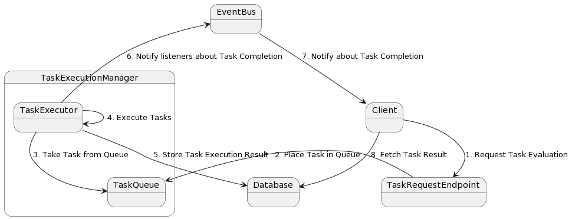

Task Management
Overview
The task management is a core component of the backend. It is responsible for the management and execution of tasks. This page gives an overview over the functionality of the task management as well as some implementation details.
Attention: This page refers to a client as the requester of a task evaluation. The client is in fact still part of the backend. It is basically an endpoint, which triggers the task execution and can be called by actual clients.
 General task execution process. The client sends a request to the task execution manager, which then evaluates submitted task, stores the result in the database and notifies the client. The client can then fetch the result from the database.
Task Execution
Since (especially dynamic) tasks may take a longer time to be processed, the task management was designed to be asynchronous. This means that the client does not need to wait for the task to be finished, but gets a task result id instead. The client can then use this id to check the status of the task. Once the task has been processed an event is emitted over an event bus to notify the client about the completion of the task, upon which the client can retrieve the result of the task. The task executor is able to process multiple tasks at the same time using multiple threads.
Delayed Task Execution
The process of requesting a task evaluation is asynchronous. First a task result is created, then a task is scheduled for execution and finally the task result ID is returned, which can then be used to register a listener for task completion. However, especially when requesting the evaluation of static tasks, the execution of the task evaluation might be called directly and post the task evaluation completion event before the listener could be registered. To solve this issue a custom DelayedTaskExecutor was implemented, which is able to delay the execution of the task evaluation. By adding a minimal delay of e.g. 50 ms the listener can be created before the task evaluation is finished in any circumstances.
Task Queue
The task management uses a task queue to limit and manage the number of tasks that are executed at the same time. This is necessary, since the evaluation of dynamic tasks requires the instantiation of Docker containers, which can be quite expensive. If the task executor has reached its maximum number of tasks, a new task request will be placed in the queue and will be executed as soon as a slot is available.
Configuration
The task manager can be configured with three parameters:
- corePoolSize: Minimal number of threads kept alive in the thread pool. (Default: 1)
- maxPoolSize: Maximum number of threads in the thread pool. (Default: 5)
- queueCapacity: Maximum number of tasks that can be stored in the queue. (Default: Integer.MAX_VALUE)
Note: The core pool size typically determines the number of tasks that can be executed in parallel. There are only new threads spawned if the number of tasks exceeds the core pool size. The maximum pool size determines the maximum number of threads that can be spawned in total. By default, the queueCapacity is set to a high number, so it is unlikely that threads are spawned than the core pool size.
All parameters can be set in the application.properties file.
Implementation Details
Task Manager
The task manager is implemented using Springs ThreadPoolTaskExecutor. It offers all necessary functionality to fit the requirements of the task management: - limit number of tasks executed at the same time -> limit number of spawned Docker containers - task queue to store tasks that cannot be executed at the moment - asynchronous task execution - easy to use in Spring applications
Event Bus
The event bus is implemented using Googles Guava EventBus. An alternative was using Springs integrated ApplicationEvents, which had the major problems of events shared between different threads. The advantage of the EventBus is that it is thread safe, allows to register multiple listeners for the same event and it is easier to use.